miniCycle User Manual
Getting Started
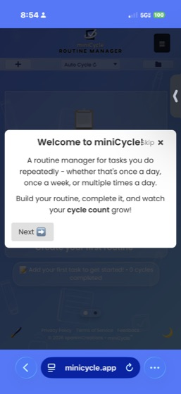
Welcome to miniCycle! This user manual will guide you through the features and functionalities of the app.
miniCycle is a routine manager that handles your repeatable tasks differently than traditional to-do apps. Most task managers treat each task as a one-off item and collect your personal data. miniCycle is different — it's a privacy-focused workflow tool that organizes your tasks into routines. When you complete all your tasks, the cycle is completed and they automatically reset so you can tackle them again. It's perfect for daily routines, weekly goals, and recurring habits.
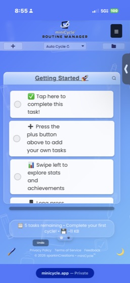
- Tap the + button to add a task or create a new routine
- Check off tasks as you complete them
- When all tasks are completed, the routine automatically resets (in Auto Cycle mode)
- Swipe left/right to switch between Task View and Stats Panel
Managing Tasks
Adding Tasks
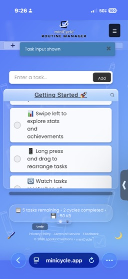
Tap the + button and select "Add Task" from the menu. Enter your task name and it will appear at the bottom of your list.
Completing Tasks
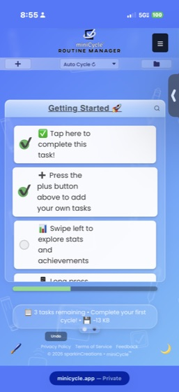
Tap the checkbox next to a task to mark it as complete. You can also undo a completion by tapping the checkbox again. Undo/redo is available for recent actions.
Cycle Complete
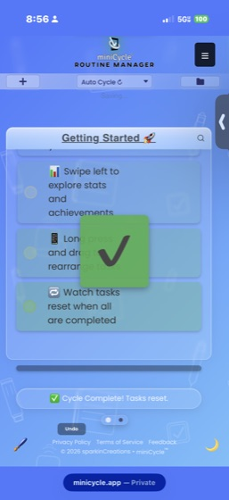
When all tasks are completed, a cycle complete animation plays and your tasks reset automatically (in Auto Cycle mode). Your cycle count increases with each completion.
Reordering Tasks
Drag and drop tasks to reorder them, or use the move arrows if enabled in Settings. Your preferred order is saved automatically.
Task Options
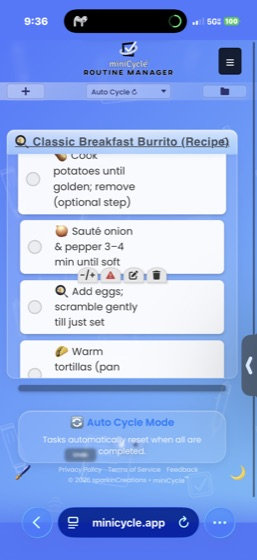
Long-press a task (or use the three-dots menu) to reveal task option buttons: customize, count adjustments, priority, edit, and delete.
High Priority Tasks
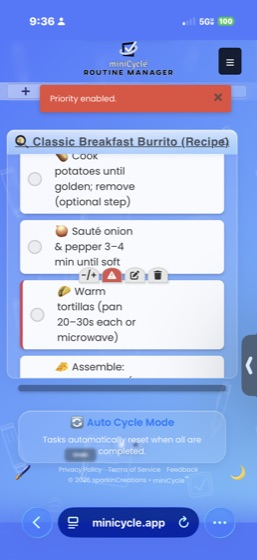
Mark important tasks with the priority button. Priority tasks display a red left border to help you focus on what matters most.
Editing Tasks
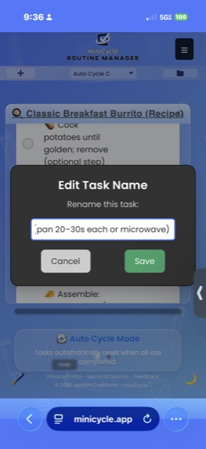
Tap the edit button in task options to rename a task. Press Save to confirm or Cancel to discard changes.
Due Dates
- Set due dates for time-sensitive tasks
- Due dates appear as badges below the task name
- Overdue tasks are highlighted
Reminders
Enable reminders to get browser notifications about pending tasks. Make sure your browser allows notifications from miniCycle.
Recurring Tasks
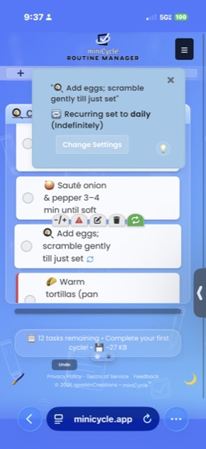
Set up tasks that repeat automatically:
- Hourly: Reappears every hour
- Daily: Reappears every day
- Weekly: Reappears every week
- Biweekly: Reappears every two weeks
- Monthly: Reappears every month
- Yearly: Reappears every year
- Specific dates: Choose exact dates for the task to appear
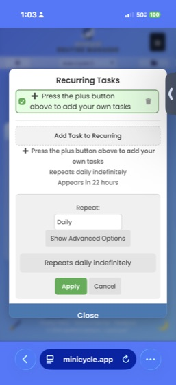
Access recurring task settings through the hamburger menu (☰) → Recurring, or through task option buttons on individual tasks.
Completed Tasks
In Settings, you can choose to collapse completed tasks into a separate section at the bottom of your task list. This keeps your active tasks front and center while still showing what you've accomplished.
Cycle Modes
miniCycle offers three different modes for how your routines behave:
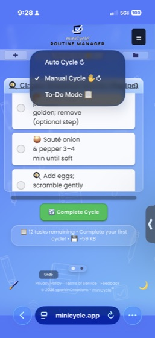
Auto Cycle Mode
When enabled, all tasks automatically reset to incomplete once you finish everything. This is perfect for daily routines and recurring habits. Your cycle count increases with each completion.
Manual Cycle Mode
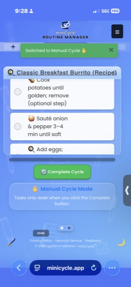
Complete all tasks, then tap the "Complete Cycle" button when you're ready to reset. This gives you time to review before starting a new cycle.
To-Do Mode
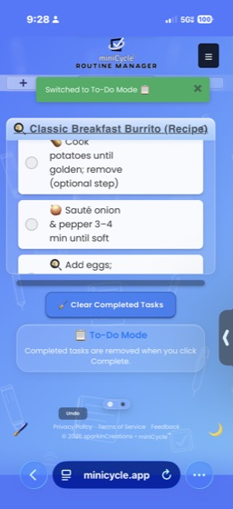
Completed tasks are removed instead of reset. Works like a traditional to-do list — perfect for one-time tasks, shopping lists, or projects.
Cleared Tasks
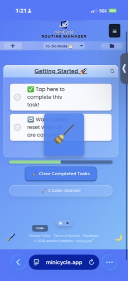
In To-Do Mode, tasks that are cleared aren't gone forever. You can view your cleared tasks history and restore any task you need back into your routine.
Managing Routines
Create different routines for different areas of your life:
- Work Tasks: Professional to-dos and projects
- Home Routine: Household tasks and maintenance
- Fitness Goals: Exercise routines and health habits
- Study Plan: Learning objectives and skill development
Routine Switcher
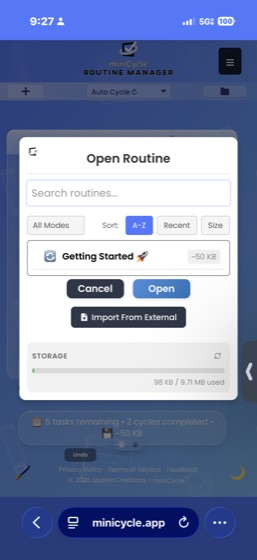
Access the routine switcher through the folder icon or hamburger menu (☰) → "Open Existing Routine":
- Browse and select from your existing routines
- Preview routine contents before switching — tasks appear in a preview window when you select a routine
- Double-tap a routine to open it immediately without pressing the Open button
- Double-tap the preview pane to pop it out as a full review modal showing all tasks and completion status
- Rename or delete routines using the action buttons
- See storage usage for each routine
Creating New Routines
Tap the + button and select "Create New Routine", or use the hamburger menu (☰) → "New Routine". Give your routine a name and start adding tasks.
Importing Routines
Import .mcyc files from other devices or users using the "Import Routine" option from the main menu. You can also drag and drop .mcyc files directly into the app window.
If miniCycle is installed as a PWA (Progressive Web App), you can open .mcyc files directly from your desktop or file explorer and they will be imported automatically.
Statistics & Achievements
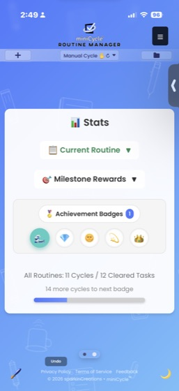
Performance Tracking
- Cycle Count: How many times you've completed this routine
- Tasks Completed: Total tasks you've checked off
- Progress Ring: Visual indicator of current cycle progress
Milestone Badges
Earn badges by completing cycles or clearing tasks — whichever milestone you reach first unlocks the badge:
- Making Waves (5 cycles / 5 tasks): First milestone — unlocks Dark Ocean theme
- Diamond (25 cycles / 125 tasks): Getting consistent
- Radiant (50 cycles / 250 tasks): Building momentum — unlocks Golden Glow theme
- Stellar (75 cycles / 375 tasks): Dedicated user
- Crowned (100 cycles / 500 tasks): Champion status — unlocks a mini-game
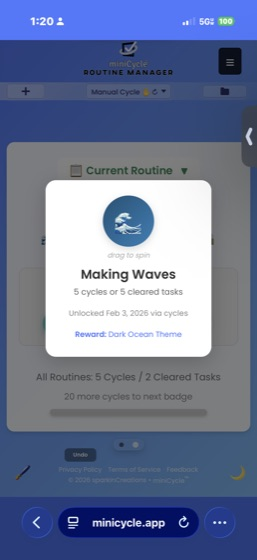
Achievements Page
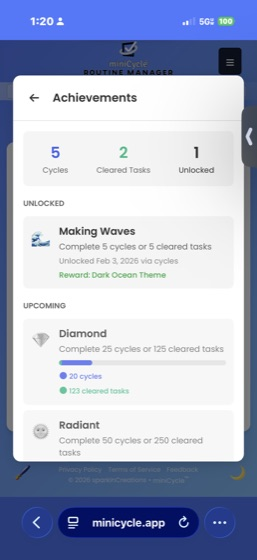
Tap any badge in the Stats Panel to view the full Achievements page. This shows all tiers, your progress toward each, and which rewards you've unlocked.
Theme Unlocks
Reaching milestones unlocks new themes: Dark Ocean at the first milestone and Golden Glow at the third. Check the Stats Panel to see your progress toward the next unlock.
Gamification & Motivation
miniCycle includes motivational features to help maintain consistency:
- Cycle Counts: Track how many times you've completed each routine
- Milestone Badges: Earn achievements for completing cycles and tasks
- Progress Ring: Visual feedback on your current cycle
- Theme Rewards: Unlock new themes through consistent use
Customization
Dark Mode
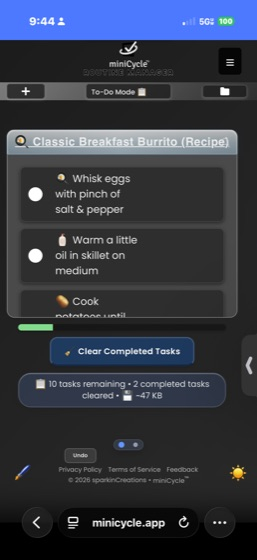
Toggle dark mode using the moon/sun icon in the lower right corner, or through Settings. Each theme has its own dark mode variant.
Themes
Choose from available themes via the hamburger menu (☰) → "Themes". Some themes are unlocked by reaching milestones (see Statistics & Achievements).
Personalization
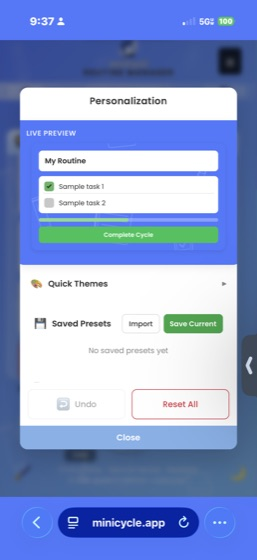
For deeper customization, open the hamburger menu (☰) → "Personalization" to access the color picker panel. This lets you:
- Customize colors for individual UI elements (task background, title, checkboxes, and more)
- Upload a custom background image
- Apply quick preset color schemes
- Save, load, export, and import your custom color presets
- Undo color changes or reset to defaults
Custom colors only apply when using the Default theme.
Task Option Buttons
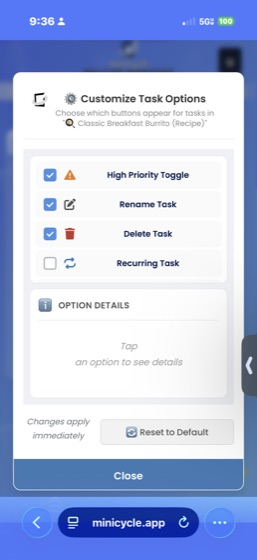
Customize which buttons appear on your tasks through the Customize (-/+) button:
- Show/hide individual options per routine
- Global settings for move arrows and three-dots menu
- Simplify the interface by hiding features you don't use
Settings
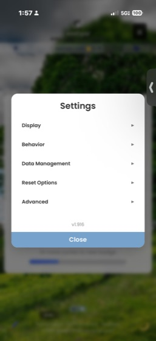
Access Settings from the hamburger menu (☰) to configure additional options:
- Show Move Arrows: Display up/down arrow buttons on tasks for reordering
- Three-Dots Menu: Show a menu icon on tasks as an alternative to long-press
- Help Window: Show or hide the help/status panel
- Scroll to New Task: Automatically scroll to newly added tasks
- Scroll on Load: Scroll to the first incomplete task when opening a routine
- Completed Tasks: Choose how completed tasks are displayed (inline or collapsed)
Responsive Design
miniCycle works seamlessly across devices — phone, tablet, or desktop. Your experience adapts to whatever screen you're using.
Data Management
Privacy & Local Storage
All your data stays on your device. Nothing is sent to external servers, so your tasks and information remain completely private.
What is Local Storage?
Local storage is a feature built into your web browser that allows websites and apps to save data directly on your device. Unlike cloud-based apps that store your information on remote servers, miniCycle keeps everything in your browser's local storage — similar to how a native app stores data on your phone. This means:
- Your data never leaves your device
- No account or login required
- Works completely offline
- No one else can access your routines
Monitoring Storage Usage
You can check how much storage your routines are using in two ways:
- Status bar: The bottom of the task view shows the current routine's size (e.g., "~3 KB")
- Routine Switcher: Open the folder icon to see the Open Routine modal. Each routine displays its storage size, and at the bottom you'll see total usage like "9 KB / 9.91 MB used" — this shows how much of your browser's available local storage miniCycle is using
Storage Limits
Most browsers provide between 5-10 MB of local storage per website. miniCycle routines are lightweight (typically 1-5 KB each), so you can create hundreds of routines before approaching any limits. If you're concerned about storage, you can export routines as .mcyc files and delete ones you no longer need.
Export & Backup
- Download Routine: Export individual routines as .mcyc files
- Backup All Routines: Create a complete backup of all your data
- Share routine templates with friends or colleagues
Import & Restore
- Import Routine: Load a single .mcyc file
- Restore All Routines: Restore from a complete backup
Factory Reset
Clear all data and start completely fresh if needed. This removes all routines, settings, achievements, undo/redo history, cached data, and IndexedDB databases. This action cannot be undone, so make sure to backup anything important first.
Advanced Features
Undo/Redo
Made a mistake? Use the undo button to reverse recent actions, or use Ctrl+Z / Cmd+Z on your keyboard. Redo with Ctrl+Y / Cmd+Y. Your undo history is preserved per routine.
Search & Filter
Use the search icon to filter tasks by name. A red indicator shows when a filter is active.
History
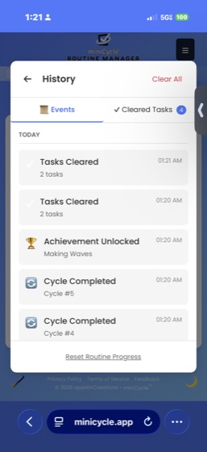
View your routine history from the Stats Panel by tapping the History button. The Events tab shows cycle completions, achievements, and cleared tasks. The Cleared Tasks tab lets you view and restore individual tasks.
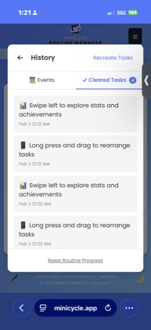
Three Dots Menu
An alternative to long-press for accessing task options. Enable it in Settings or through Customize Task Options.
About
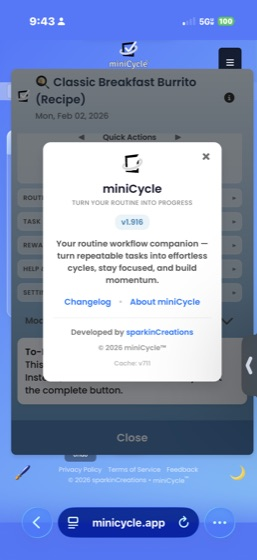
View app version and information through the hamburger menu (☰) → "About miniCycle".
App Diagnostics
Run app health checks, verify data integrity, and view debug information through Settings → Open App Diagnostics & Testing. This includes tools for backup management, data repair, and generating debug reports if you need to troubleshoot an issue.
Keyboard Shortcuts
miniCycle is fully keyboard-accessible. Here are the available shortcuts:
General
- Ctrl+Z (Windows) / Cmd+Z (Mac): Undo last action
- Ctrl+Y or Ctrl+Shift+Z (Windows) / Cmd+Y or Cmd+Shift+Z (Mac): Redo last action
- Escape: Close any open menu or modal
- Shift+Right Arrow: Switch to Stats Panel
- Shift+Left Arrow: Switch back to Task View
Tasks
- Enter on a task checkbox or label: Toggle task completion
- Enter while editing a task name: Save changes
- Escape while editing a task name: Cancel and discard changes
Task Options
- Left/Right Arrows: Navigate between task option buttons
- Enter or Space: Activate the focused button
- Escape: Close task options and return focus to the task
Routine Switcher
- Enter while editing a routine name: Save the new name
- Escape while editing a routine name: Cancel and restore original name
Settings & Menus
- Enter or Space: Toggle settings switches and expand/collapse menu sections
- Up/Down Arrows: Navigate dropdown options
Frequently Asked Questions
How do I rename a routine?
Tap on the routine title at the top of the task list, or use the rename option in the routine switcher.
What happens if I delete a routine?
Deleted routines cannot be recovered unless you have an exported backup file (.mcyc).
Can I use miniCycle offline?
Yes! miniCycle is a Progressive Web App (PWA) that works completely offline since all data is stored locally on your device.
How do I set up recurring tasks?
Long-press a task (or use three-dots menu) and tap the recurring icon. Choose your frequency and optional time settings.
Why aren't my notifications working?
Ensure that reminders are enabled for the task, and that your browser/device allows notifications from miniCycle.
How do I backup my data?
Use Settings → Backup All Routines to create a complete backup, or use the hamburger menu → Download Routine for individual routines.
Can I sync data between devices?
Not automatically — miniCycle is privacy-focused with no cloud sync. However, you can export from one device and import to another using .mcyc files.
What's the difference between priority and due dates?
Priority marks important tasks with a visual indicator (red border). Due dates set a specific deadline and can trigger reminders.
What's the difference between routines and cycles?
A routine is the persistent checklist you create. A cycle is one complete run-through of that routine. Your cycle count tracks how many times you've completed the routine.
Where did my cleared tasks go?
In To-Do Mode, cleared tasks are saved in a history. You can view and restore them from the cleared tasks panel.
How do I reset the onboarding tutorial?
Go to Settings → Reset Onboarding to see the welcome tutorial again.